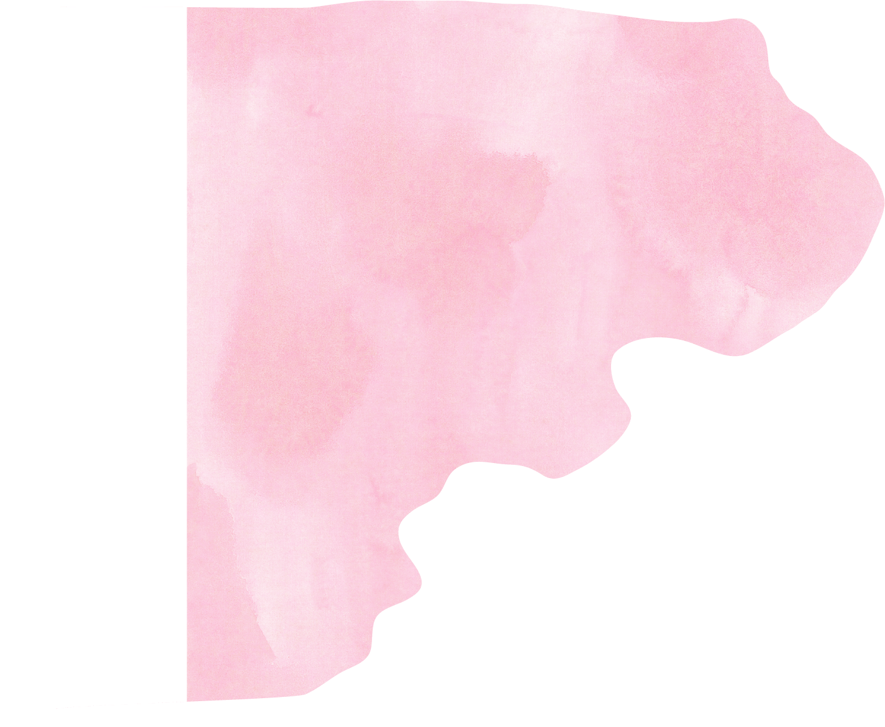
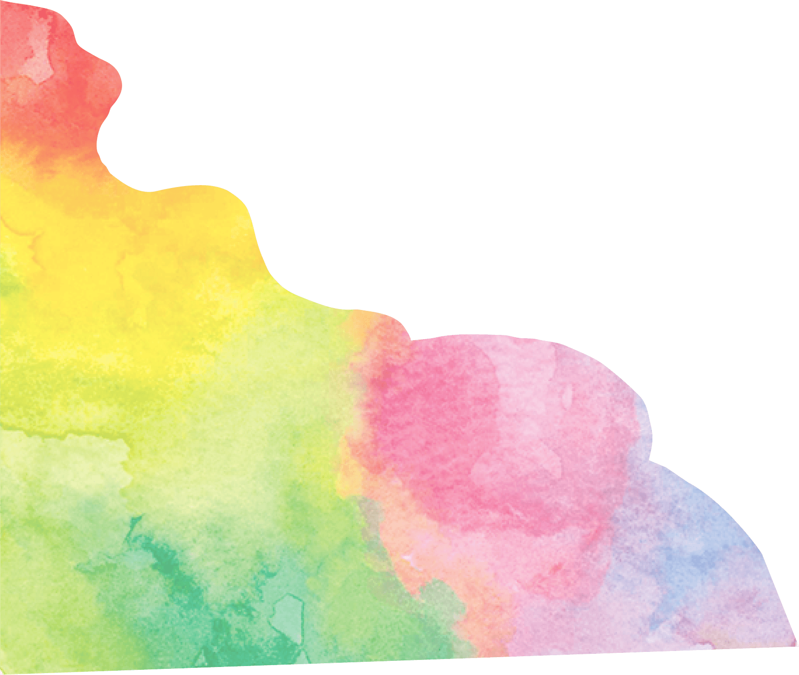
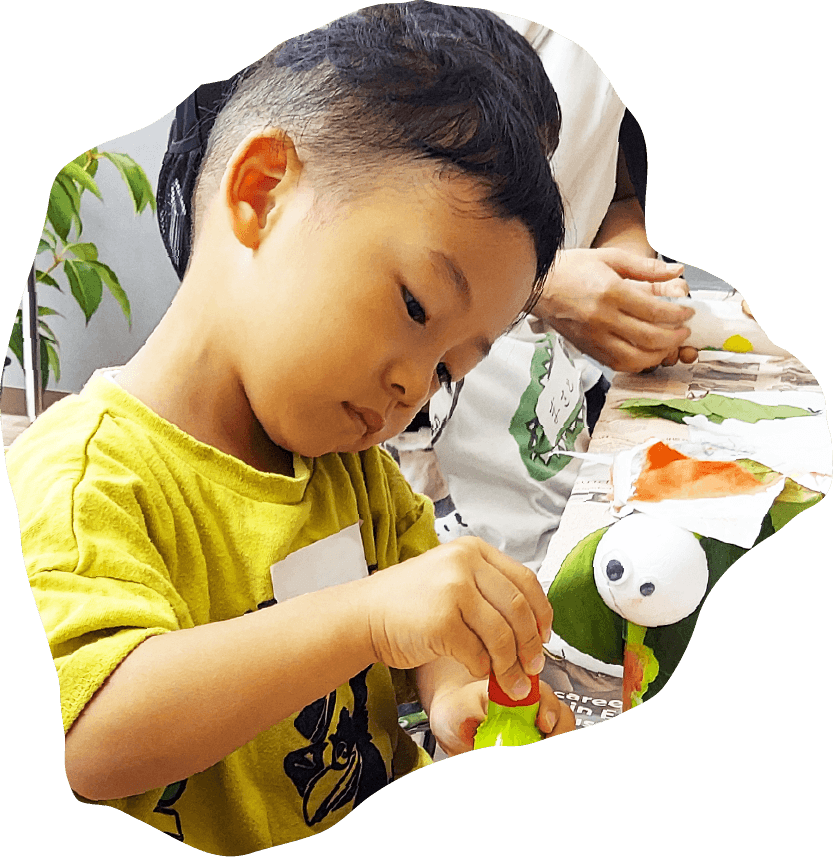
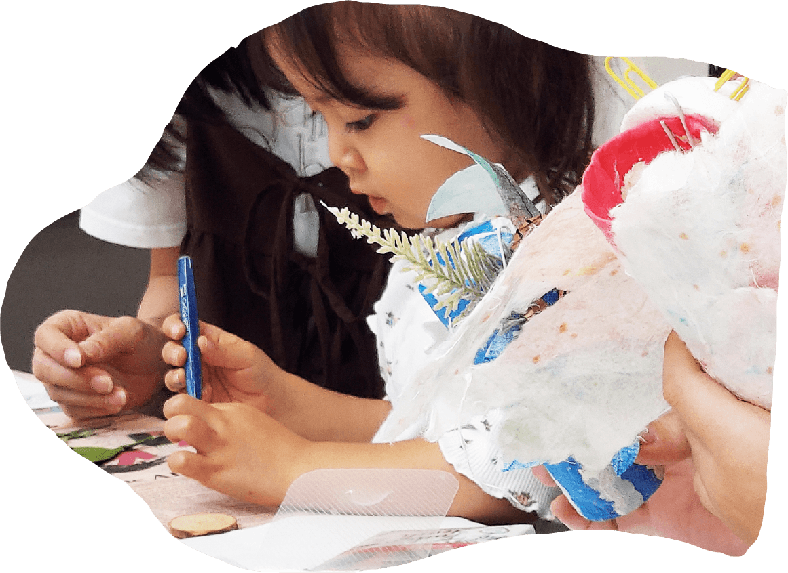
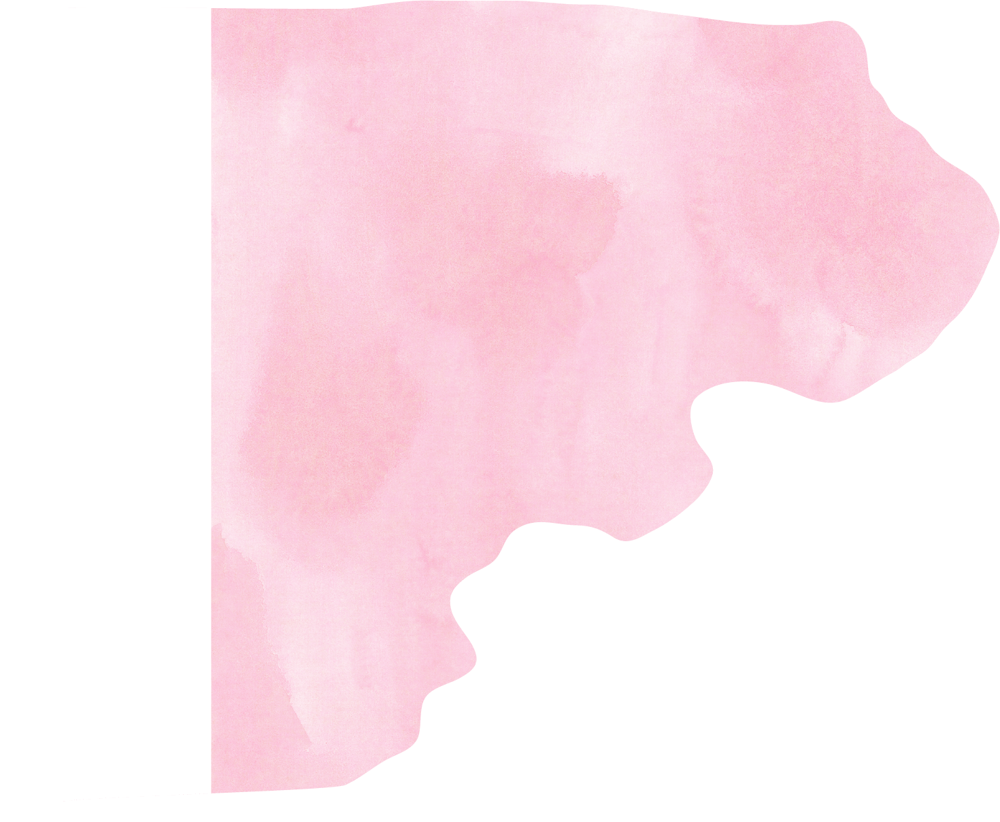
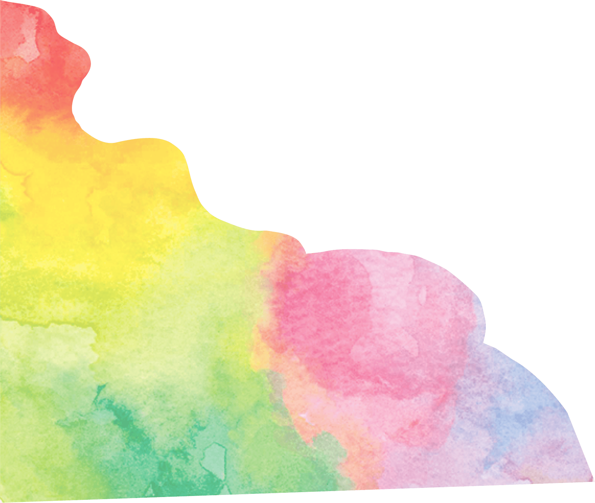
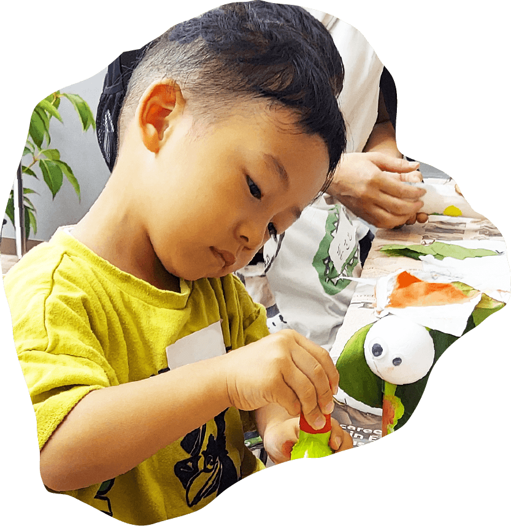
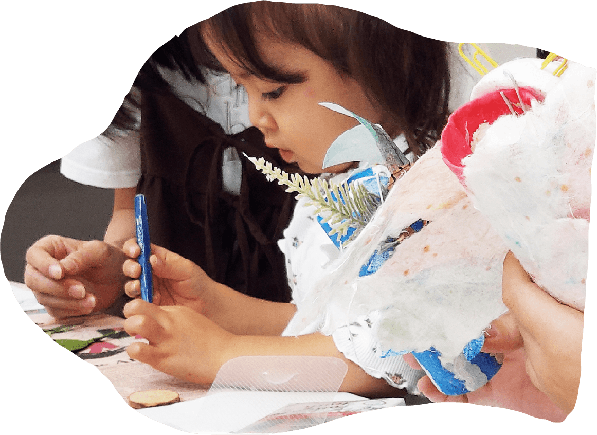

- ・対象：0歳（5ヶ月）〜小学校高学年
- ・場所：有明ガーデン4F
- ・少人数制クラス
これからの世界に必要なのは、
「正解」よりも「問いを立てる力」。
変化の時代を生きる子どもたちに必要な、
“新しい価値を生み出す力”。
Gakken Creative Garden (GCG) は、
小学校受験で問われるレベルの
思考力を育みながら、
受験のために型にはめるのではなく、
子ども自身の興味や違和感を出発点に、
多様な視点と出会い、
思考と創造を深めていく学びの場です。
考えることを、急がせない。
わかる前の「気づき」を、大切に。
- ・対象：0歳（5ヶ月）〜小学校高学年
- ・場所：有明ガーデン4F
- ・少人数制クラス
教室のビジョン
AIが答えを出す時代に、
子どもたちに必要なのは
「正解を選ぶ力」ではなく、
「問いを生み出す力」。
GCGは、
知育（小学校受験レベルの思考力）・
創造・自然・テクノロジーを
分けずに循環させながら、
0→1の創造性と、1→100の思考力を
幼児期から育てていきます。
「正解」を教える教育から
「問い」を生み出す教育へ。
AIが瞬時に答えを出す時代。
お子様が大人になる20年後、知識の量そのものに価値は
なくなっているかもしれません。
今、私たちが子どもたちに手渡せる最高のギフト。
それは、自らを感じ、考え、新しい価値を創造する「人間だけの力」です。
既存の枠組みに当てはめるのではなく、内側にある100の可能性を解き放つこと。
10年後、20年後の世界を、凛として歩むための知性と感性を、今ここで。
と 他教室との違い
一般的な幼児教室は……
- ・正解を求める
- ・年齢別カリキュラム
- ・スキル重視
- ・評価軸が外在
ですが、
は……
- ・問いを立てる
- ・学齢別×子ども起点の循環型
- ・知育×創造×自然×テクノロジー統合
- ・内発的動機
の特長
知育と創造を、
分けない学び
GCGのレッスンは、知育から
創造へと流れる構成です。
考えたことを、感じ、表してみる。
その循環が、学びを深めていきます。
学研の知見を
土台に
長年の研究に基づく知育を、年齢に
合わせて取り入れています。
先取りではなく、理解の芽を
育てることを大切にします。
少人数制・
落ち着いた環境
一人ひとりの様子に目を向けながら、
無理のないテンポで進めます。
静かな環境だからこそ、
集中と対話が生まれます。
4領域の統合設計
GCGは4領域の統合設計。
単独ではなく掛け合わせることで
「立体的成長」を実現します。
 で育む5つの力
GCGは「受験対策だけの教室」
ではありません。
ひらめきを恐れず
量産できる
正解のない問いに対して、
自分なりのアイデアを
自由に発想する。
違和感に気づき、
問いを立てられる
当たり前を疑う
感性を持ち、自ら探究の
スタート地点をつくる。
仲間と協働し、
より良いものを生み出せる
他者の意見を取り入れ、
独りでは到達できない
創造を実現する。
論理と言葉で
考えを伝えられる
感性で捉えたものを言語化し、
相手に届くロジックで表現する。
内発的動機が高く、
学び続ける姿勢
外部からの評価だけでなく、
自らの知的好奇心を
原動力にする。
「合格できる子」ではなく、
「未来を切り開く合格者」を育てます。
講師について
GCG講師は、長年にわたり
小学校受験指導に携わり、
多くの合格実績を
積み重ねてきたプロフェッショナルです。
子どもの発達段階や受験で
求められる力を熟知しているからこそ、
今、何を大切にすべきかを
見極めた関わりができます。
ただし、私たちが目指しているのは
「合格する子」を育てること
そのものではありません。
受験をゴールにするのではなく、
その先の学びや人生につながる
思考力・感性・主体性を育てることを
何よりも大切にしています。
活動の中で講師が重視しているのは、
知識を一方的に教え込むことではなく、
子ども自身の「気づき」や「問い」に寄り添い、
ともに考える姿勢です。
講師が大切に
していること
否定せず、
まず受け止めること
「考える時間」
を守ること
違いを尊重し、
学びを深めること
答えを先に示すのではなく、
考えるプロセスを支え、深めていく――
講師は、子どもたちの探求に並走する存在です。
受験指導で培ってきた確かな専門性と、
子どもとフラットに向き合う探究的なスタンス。
その両立こそが、GCGの講師の大きな特長です。
まずは体験会で、
講師と子どもたちが対話を重ねながら
学びを広げていく教室の空気を、
ぜひ実際に感じてみてください。
授業の流れ
知育タイム

考える感覚を、整える時間
数や形、順序にふれながら、
話を聞き、考えてみます。
答えを急がず、「わかる」手前の
気づきを大切にします。
※小学生は読解作文タイムとなります。
創造タイム
感じたことを、表してみる時間
前半で考えたことを、描く・つくる・
組み合わせることで表現します。
上手につくることより、自分なりの選び方を
大切にします。
の時間割
今後、教室運営やカリキュラム調整等により、日程が変更となる場合がございます。
最新情報は本ページにて随時更新いたします。
コースのご案内
※その他半年に一度施設教材費を頂戴します。
※通室振替制度あり（教室規定に則っての取得となります。）
※きょうだい割引制度あり
※小学校受験サポートについて
志望校に合わせての「願書の書き方」、「面接演習」等サポートいたします。
詳しくはお尋ねください。
小学校受験を考えていますが、
GCGは受験対策教室ですか？
GCGは受験対策専門の教室ではありませんが、小学校受験レベルで求められる思考力を育てることを大切にしています。
受験に向けたアドバイスやご家庭でのサポート方法のご相談、お子さまのメンタルケアにも対応しながら、その先につながる「考える力」「創造する力」を育みます。
まだ幼いのですが、
授業についていけますか？
年齢や発達段階に応じたクラス編成と、少人数制の環境で行っています。
一人ひとりのペースを大切にし、無理に答えを出させることはありませんので、安心してご参加いただけます。
遊びのように見えますが、
学力は身につきますか？
GCGの学びは、単なる遊びではありません。数や形、言葉、順序といった知育要素を土台に、考え、試し、表現するプロセスを重ねていきます。
どんな講師が教えていますか？
長年、小学校受験指導に携わり、多くの合格実績をもつプロ講師が担当しています。
月謝や通い方について
教えてください。
月謝制でのご案内となります。
クラスや年齢により異なるため、詳細は体験会・説明会にてご案内しています。
“自然とテクノロジー”の組み合わせが
本当に新鮮で、ここでしか味わえない
体験だったと感じます。
AIロボットZukkuとの
やり取りには
子どもが
大興奮でした。
新鮮な体験で、
ずっと笑顔でした。
参加された保護者様の声
お子様の可能性を、
型にはめるには早すぎます。
自由に描き、何度でも
描きなおせる
「創造性の原点」を。
まずは、親子で
その空気感に
触れてみてください。